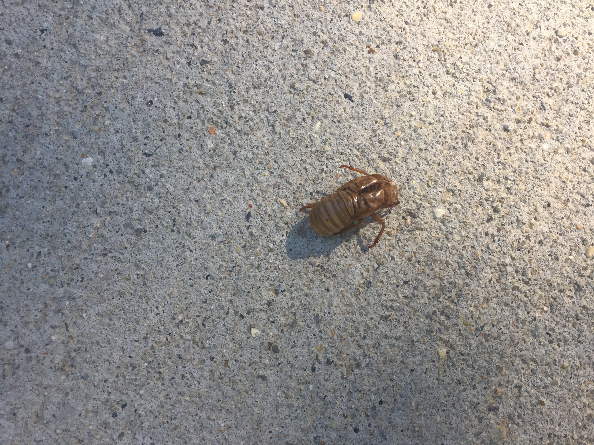
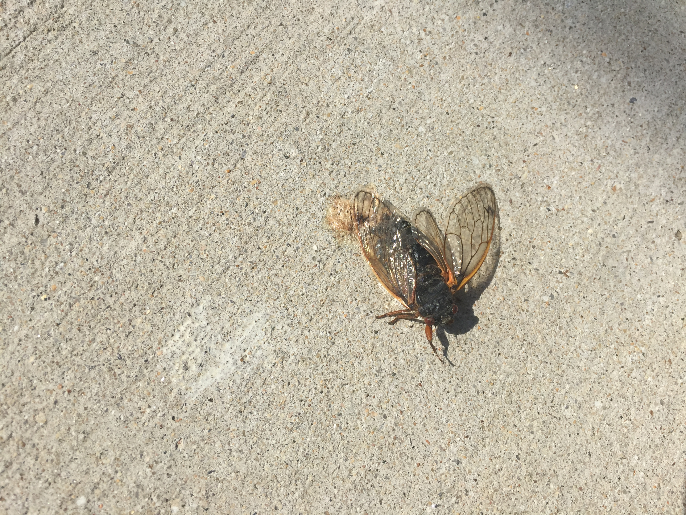

Essays
Mulberries
I don’t remember when my dad first introduced me to mulberries. Maybe they were one of those things he did by himself until I was old enough to join him. Or maybe they were always there and I just didn’t notice.
The first sign is dark stains on the sidewalk. Then you look up and see yes, this is the time and place. I suppose one could write down the location of some of the mulberry trees so that year to year one would know where to go instead of bumbling into them every spring. But that seems like it would be against the spirit of the ritual. Instead I operate on vague memories and surprise.
Mulberries amaze me because they are a part of the city. For years I have been carefully coaxing seeds into vegetables. I get as close as I can to doing it all myself, although even as I do I realize that getting there isn't possible. There will always be seeds I didn't collect, plants that have to grow themselves, and tools I didn't make. I cannot stand alone in a web. When I was younger I resisted the responsibility that went with being an older sibling even as the caring marked me. I feared that I wouldn't remember to get him or that something would happen that I couldn't prevent. As we've grown older we've grown closer in age. It has turned into a mutual taking care and then I have chosen to take care of others. It has become a part of me. And yet I still struggle to water the plants enough. I forget, or I think the tomatoes should be watered in the morning, or maybe it will rain. Then I see their parched bodies and remember it has been too long. And I feel so guilty for it. So I appreciate food that grows without my intervention. The berries take care of themselves.
The thing about picking is that mulberry trees grow tall. More often than not, you'll see the fallen fruit and be unable to reach the branches they came from. Even if one year the tree is low enough, by the next year it may have graduated to beyond human reach. This isn't just delayed gratification. This is knowing that you will never get what you want. The good thing is that, at least in my neighborhood, there will always be another tree. But it can be difficult to choose another goal.
At some point it may be tempting to pick up the lovely, full berries lying on the ground, but do not because surely the ants have gotten there before you, even if you can't see them. There aren't many rules in life, but I recommend that one. Although, if you were the one to knock it off you probably are fast enough. The other day my aunt asked if I had any absolute principles. I wanted to say love, or compassion. Or to be myself. But sometimes loving one person means that you have to ask someone who would hurt them to find another place. Sometimes compassion is unfair. It would be nice to have just one thing and to then not have to think about any others, but
When I was far from home I was speaking with two other strangers. I was trying to describe where I was from in terms of lived experience rather than the tourist one. And mulberries seemed like a good place to start. I explained the way I usually do -- they look like blackberries but are not. I never know what to say next. They taste like mulberries. The others didn't know either in the language we were speaking, but to my surprise they seemed to know in their own. Like colors, I didn't know if we were thinking of the same thing, but they also were quiet and nice and somehow I associated all three and decided we must be.
Of course, once you pick the mulberries, you can eat them. You may open the bag to discover that you crushed some of them on the way home. This okay. We are all doing our best. If you are going to make something with them you may discover that it is probably not worth the effort -- the stem seems somehow necessary to the structural integrity of very ripe berries. Well, none of this is objectively worth it. It's only worth it because of the enjoyment you get. So if you are brave enough to get here you could start by searching mulberry recipes, but I don't think I have. I made tartlets one year with a bit of sugar and some lemon and cornstarch in a muffin-sized pie crust. And you can put them on pancakes. Or in pancakes. Or make jam. Really, anything you can imagine. Although by the handful is also a perfectly acceptable method.
Recently I have started to run into mulberries everywhere -- reading about silk production, types of paper, and in a Babylonian myth startlingly similar to Romeo and Juliette. According to the legend, mulberries are dark because the blood of Pyrmus falls on them. Except some are white, even when fully ripe. Pyrmus and Thisbe had fallen in love by talking though a hole in the wall, which I have to admire in a pandemic. I wonder if it was easier to be themselves if they didn't have to look each other in the eye.
I still don't know how to tell what experiences are universal and which are unique. I have been working on talking about my experience though: "I feel" and "I think" and trying to locate the source of how and why I do. However, then it can come off as assuming that it is just me. Mulberries are not just me. But they are me.
18 July 2021
Cicadas
They asked me if I remembered -- before they came. Dropping one by one. No, I didn’t, I said, but of course I didn’t. How could I. So I turned the question on them -- do you?
Maybe that was why my neighbors asked. Because they are not used to people as old as I am not remembering. Because you’d remember, if your life had overlapped.
The cicadas live apart from us. They do not give us diseases; we do not rely on them for food. And yet when I see them I start to understand how insects could be a plague rather than another seasonal star. Because the sidewalks I walk on are full of their corpses. Yes, insects are living and breathing and dying around us all the time, but I am not usually confronted with such a memento mori on my walk home. With the birds I can say a prayer to whatever Being. I cannot with the cicadas. There are too many. But who am I to complain about that pain? They are the ones dying.
It was strange to see the corpses before the insects. But soon after I saw the skins discarded on the ground, like pennies or apple seeds. Once useful. I am caught by the forms, the contradiction between black body, golden exoskeleton; the light catches their wings; the same form over and over with slight variations. I take pictures of these. But I am not quite sure why I have the urge to do so. And I am not sure who would want to see them.
Now the sirens wail. Like snow, it impresses me that something so small can take over so much of my world. And I worry about what they warn of. The optimist in me would like to think it’s not us.
I was surprised, the first time one of them landed on me. I wasn't expecting that much resistance to my attempt to brush them off. But also, suddenly, they were real. They were no longer the ones spoken about in whispers by wise elder folk or the scientific anomaly whose enlarged pictures unfurled over sidebars. It was like meeting a celebrity.
Over the past several weeks I've developed a technique: find a thin stick of suitable length, offer it longwise above the insect. Once they grab on gently and slowly bring the stick to the ground. Repeat until the cicada is upright and able to walk away. But I do not know if it helps. I do know a story about someone walking along the beach. They were throwing starfish that had washed up back into the ocean. Someone came up to them and asked them why the person was throwing the starfish. They couldn’t save all of them. The person said “but I saved that one. And that one. And that one.”
The part that makes the cicadas an event seems to be that they come every 17 years. But I’m also thinking about the fact that this is always happening -- in 2 and 3 and 15 years the cicadas will still be there. They just won't be seen. But I think in 2 or 3 or 15 years I’ll see small holes in the ground or bugs that almost sound like them or a picture in a book and I will remember when they were real. Or rather, I’ll remember that they are growing right now. And I may even tell, almost warn, someone younger than me about the cicadas they will one day try not to step on.
 7 June 2021
Ice Breaking
Somewhere, in the handbook of how to hold human meetings, it must suggest that ice breaking is an essential part of the process. Specifically, it must imply that ice breakers are necessary.
Because otherwise why would people have them? Or maybe that's just me because I can never remember my favorite color or animal or what kind of salad begins with my first initial. And somehow, even if I do, it doesn't seem any better than if I hadn't said anything.
The first words are often the hardest. There is so much pressure riding on them because they are everything that you know about me. Any words after are a diminishing fraction of everything. And it is an impossible task to convey the entirety of one's being in a salad.
So there are solutions. Instead of the first category, favorites, or the second category, occupation (which could also be grade, what school you go to, what city you're from, or anything else that says something about what you do but perhaps little about who you are), there is a third option: what vegetable represents your soul? If you could fly to the moon, would you? Where would you go? Who would you be? Done well, these questions speak to the how of you, if not the what. They convey your being in the thinking. However, this is not a perfect solution. These questions can demand too much introspection for the five seconds you have. And that can make your confidence leak when you need it most: when you meet me.
As usual, perhaps the answer is to be more charitable. Maybe the ice breaker does not have to be extraordinary: it just has to be good enough. Maybe the people leading them are thinking about the next presentation; the next activity; the complexity of bringing together many people and hoping they all go in similar enough directions for the time they are together. I tend toward optimization, but I am learning to let go just enough for one moment. And that seems anathema to an ice breaker.
So, a final question: What even is an ice breaker?
May 31st 2021